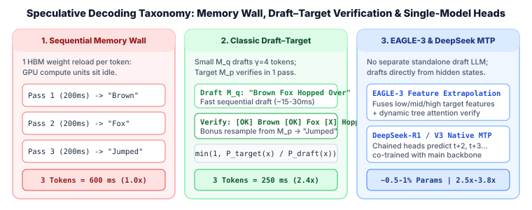
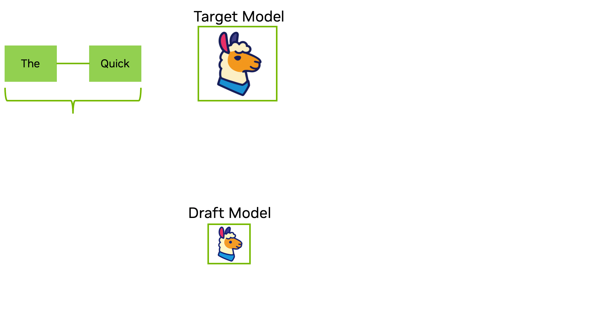
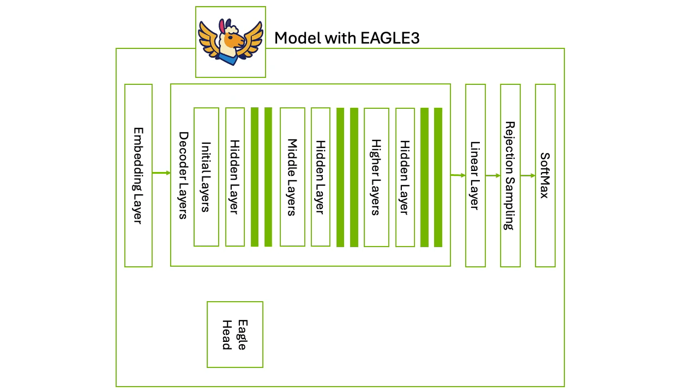
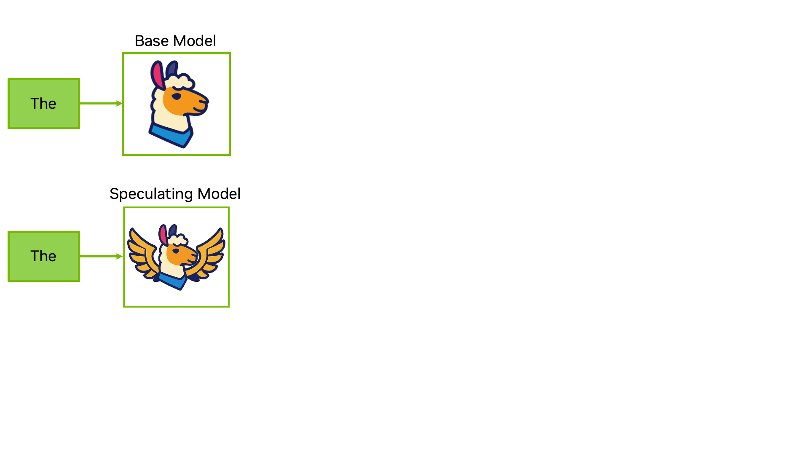
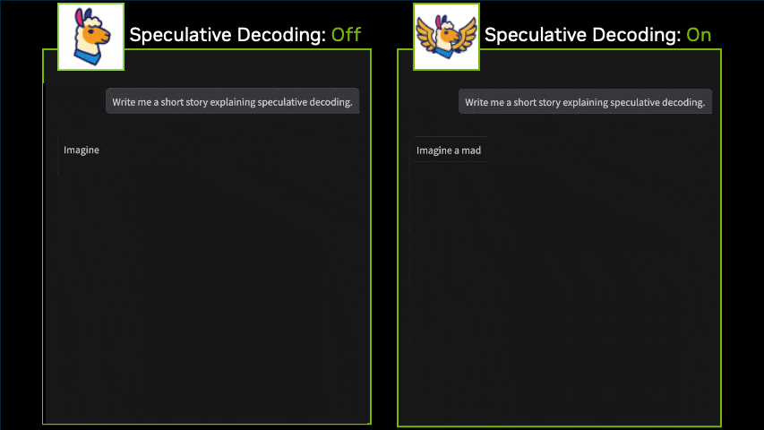

1. An Introduction to Speculative Decoding: Draft–Target Verification, EAGLE-3 & Multi-Token Prediction
Adapted from the NVIDIA Technical Blog article An Introduction to Speculative Decoding for Reducing Latency in AI Inference by Jamie Li, Chenhan Yu, and Hao Guo (September 2025). Figures and animations are reproduced from the original article; click any figure to view it at full resolution.

Key Takeaways
- Breaking the sequential wall: Speculative decoding pairs a large target model with a lightweight draft mechanism to propose and verify multiple tokens per forward pass, cutting latency and boosting throughput while preserving output quality.
- Classic Draft–Target verification: Uses a separate smaller model to generate candidate tokens that the target model verifies in parallel, accepting the longest matching prefix through rejection sampling.
- EAGLE-3: Eliminates the separate draft model by attaching a lightweight drafting head to the target model's internal layers, using multi-layer fused features and a dynamic draft tree to improve acceptance rates.
- Multi-Token Prediction (MTP) in DeepSeek: Employs specialized prediction heads to forecast several future tokens simultaneously, offering a verification-based speedup without a separate drafter.
- Turnkey conversion with TensorRT-Model Optimizer: The NVIDIA TensorRT-Model Optimizer API provides a Speculative Decoding module (
modelopt.torch.speculative) that converts models to use EAGLE-3 in just a few lines of Python. - Collapsed waiting periods: By collapsing sequential generation steps into fewer forward passes—for example, generating three tokens in one $250\text{ ms}$ pass instead of three $200\text{ ms}$ passes ($600\text{ ms}$ total)—speculative decoding creates far more responsive interactive applications.
Generating text with large language models (LLMs) often involves running into a fundamental bottleneck. GPUs offer massive compute, yet much of that power sits idle because autoregressive generation is inherently sequential: each token requires a full forward pass, reloading weights from high-bandwidth memory (HBM), and synchronizing memory at every step. This combination of memory access and step-by-step dependency raises latency, underutilizes hardware, and limits system efficiency.
Speculative decoding helps break through this wall. By predicting and verifying multiple tokens simultaneously, this technique shortens the path to results and makes AI inference faster and more responsive, significantly reducing latency while preserving output quality. Below, we explore how speculative decoding works, when to use it, and how to deploy advanced techniques like EAGLE-3 and Multi-Token Prediction on GPUs.
1. What Is Speculative Decoding?
Speculative decoding is an inference optimization technique that pairs a target model with a lightweight draft mechanism that quickly proposes several next tokens. The target model verifies those proposals in a single forward pass, accepts the longest prefix that matches its own predictions, and continues from there. Compared with standard autoregressive decoding, which produces one token per pass, this technique lets the system generate multiple tokens at once, cutting latency and boosting throughput without any impact on accuracy.
Though highly capable, LLMs often push the limits of AI hardware, making it challenging to further optimize user experience at scale. Speculative decoding offers an alternative by offloading part of the work to a less resource-intensive mechanism.
With speculative decoding, the lightweight assistant proposes multiple possible continuations and the larger model verifies them in batches. The ultimate benefit is reducing the number of sequential steps, alleviating memory bandwidth bottlenecks. Critically, this acceleration occurs while preserving output quality, as verification mechanisms discard any results divergent from what the baseline target model itself would generate.
2. Speculative Decoding Mechanics: Draft–Target, Rejection Sampling & EAGLE-3
This section lays out the core concepts behind speculative decoding, breaking down the mechanics that make it effective. To begin, the Transformer forward pass allows sequences of tokens to be processed in parallel. Subsequent steps include draft generation, parallel verification, and rejection sampling. Together, these fundamentals provide the context needed to understand both the classic draft–target method and advanced single-model architectures like EAGLE-3.
The Draft–Target Approach
The draft–target approach is the classic implementation of speculative decoding, operating as a two-model system:
- Target Model ($M_p$): The large, high-quality model whose output you want to accelerate (the meticulous chief scientist ensuring correctness).
- Draft Model ($M_q$): A much smaller, faster model—often a distilled or smaller-parameter member of the same model family—working alongside the target to propose candidate continuations rapidly.
Figure 1 shows this partnership in action: given the input prompt "The Quick", the draft model rapidly proposes four draft tokens ("Brown", "Fox", "Hopped", "Over"). The target model ingests the prompt and all four draft tokens in one pass, verifies and keeps the first two ("Brown" and "Fox"), rejects "Hopped" (and everything after it), and simultaneously emits its own corrected token ("Jumped") from the same forward pass.

"Brown", "Fox", "Hopped", "Over"; the target model verifies "Brown" and "Fox", rejects "Hopped", and generates "Jumped" in a single forward pass.Speculative decoding using the draft–target approach involves three core stages:
1. Draft Generation
A smaller, more efficient mechanism autoregressively generates a sequence of $\gamma$ candidate tokens (typically $3$ to $12$ tokens). Usually this is a separate smaller model trained on the same data distribution, where the target model's output serves as ground truth during distillation.
2. Parallel Verification
The target model processes the input sequence and all $\gamma$ draft tokens simultaneously in a single forward pass, computing probability distributions for each position. Thanks to the KV Cache (which already stores keys and values for the prefix), only the new speculated tokens incur compute cost during verification.
3. Rejection Sampling
After the target model produces its probability distributions, the acceptance logic compares the draft probability $P_{\text{Draft}}(x)$ against the target probability $P_{\text{Target}}(x)$ token by token from left to right, accepting valid prefixes and resampling at the first rejection.
Rejection Sampling and the Lossless Guarantee
Rejection sampling is the decision-making stage that occurs after the probability distribution from the target model has been generated. Its key aspect is the acceptance logic. As Figure 2 illustrates, this logic compares the proposed probability of the draft model, $P(\text{Draft})$, against the actual probability assigned by the target model, $P(\text{Target})$, at each candidate position.
- For the first two tokens,
"Brown"and"Fox", $P(\text{Target}) \ge P(\text{Draft})$, so they are immediately accepted ($\text{accept probability} = \min\!\left(1, \frac{P_{\text{Target}}(x)}{P_{\text{Draft}}(x)}\right) = 1$). - However, for the third token,
"Hopped", $P(\text{Target})$ is significantly lower than $P(\text{Draft})$, indicating an unreliable prediction, and the token is rejected. - When a token such as
"Hopped"is rejected, both it and all subsequent tokens in the draft ("Over") are discarded because every following token was conditioned on the rejected prefix. The process immediately produces a corrected token ("Jumped") from the target model's verified distribution at the last accepted prefix ("The Quick Brown Fox").
"Brown" and "Fox" pass ($P(\text{Target}) \ge P(\text{Draft})$), "Hopped" fails, subsequent draft tokens are discarded, and the target model emits "Jumped".This rigorous, token-by-token validation guarantees that the final output follows the exact same probability distribution as what the target model would have produced on its own, ensuring that speedups come with zero loss in accuracy. (See Chapter 3 for the complete mathematical proof and speedup derivation.)
The ratio of accepted draft tokens to total drafted tokens is the acceptance rate ($\alpha$). Higher acceptance rates equate to larger speedups, and at worst—if every draft token is rejected on the very first position—the target model still emits one valid corrected token from its forward pass, matching standard single-token autoregressive progress.
The EAGLE Approach to Speculative Decoding
EAGLE (Extrapolation Algorithm for Greater Language-Model Efficiency) is a speculative decoding method that operates at the feature level, extrapolating from the hidden states just before the target model's output LM head. Unlike the draft–target approach, which relies on a separate standalone draft model to propose tokens, EAGLE uses a lightweight autoregressive prediction head that ingests features directly from the target model's hidden states. This eliminates the operational overhead of hosting, aligning, and running a second model while still allowing the target model to verify multiple token candidates per forward pass.
EAGLE-3, the third generation of EAGLE, builds on this foundation with two major architectural capabilities:
- Multi-layer fused feature representations: Instead of only using the final top-layer hidden state, EAGLE-3 extracts and fuses low-, middle-, and high-level embeddings directly from the target model's internal layers into its drafting head, providing a much richer semantic and syntactic signal for multi-step drafting.
- Context-aware dynamic draft tree & parallel tree attention: Inherited and refined from EAGLE-2, EAGLE-3 proposes multiple chained hypotheses arranged as a dynamic tree rather than a single linear chain. All candidate branches in the draft tree are verified simultaneously by the target model in a single pass using parallel tree attention, pruning invalid branches and boosting both acceptance rate and throughput.

What Is the EAGLE Head?
Instead of using a separate, smaller model as in the draft–target approach, EAGLE-3 attaches a lightweight drafting component to the internal layers of the target model called an EAGLE head. The EAGLE head is typically made of a lightweight Transformer decoder layer followed by a final linear projection (or reuses the target's LM head)—essentially a miniature, stripped-down version of the building blocks that make up the main model.
This EAGLE head generates not just a single flat sequence, but an entire tree of candidate tokens. Crucially, this process is instance-adaptive: the head evaluates its own confidence as it expands the tree and stops drafting along a branch if confidence drops below a threshold. This allows the EAGLE head to explore multiple generation paths efficiently—generating deeper branches on predictable text and shallower branches on high-entropy reasoning steps—all verified for the runtime cost of one target forward pass.
Multi-Token Prediction (MTP) in DeepSeek-R1
Similar to EAGLE, Multi-Token Prediction (MTP) is a speculation technique used across the DeepSeek model family (including DeepSeek-V3 and DeepSeek-R1) where the model is trained natively to predict several future tokens at once rather than only the immediate next token.
MTP uses a multi-head architecture where each auxiliary head acts as a dedicated token drafter for a specific future offset: the first MTP head guesses the first draft token ($t+2$), the second head guesses the one after that ($t+3$), and so on. During inference, the main model checks those guesses in order and keeps the longest prefix that matches. Like EAGLE, this naturally removes the need to deploy a separate standalone drafting model.
| Dimension | Classic Draft–Target | EAGLE-3 | DeepSeek Multi-Token Prediction (MTP) |
|---|---|---|---|
| Drafting Mechanism | Separate standalone small LLM (e.g., 1B drafting for 70B) | Single lightweight Transformer head attached to target layers | Multiple specialized prediction heads ($k=1,2,\dots$) trained with the backbone |
| Input to Drafter | Discrete token IDs | Fused low-, middle-, and high-level target hidden states + token embeddings | Main model hidden representations chained across MTP modules |
| Proposal Structure | Linear chain of $\gamma$ tokens | Instance-adaptive, confidence-pruned dynamic draft tree | Sequential multi-step token predictions |
| Deployment Footprint | Must host & manage two separate models + two KV caches | Single model + tiny EAGLE head (~0.5–1% params) | Single model with native MTP heads built into checkpoint |
3. How to Implement Speculative Decoding with TensorRT-Model Optimizer
You can use the NVIDIA TensorRT-Model Optimizer (modelopt) API to apply speculative decoding to your own Hugging Face models. The steps below convert a pretrained model (meta-llama/Llama-3.2-1B) to use EAGLE-3 speculative decoding via the modelopt.torch.speculative module.
Step 1: Load the Original Hugging Face Model
import transformers
import modelopt.torch.opt as mto
import modelopt.torch.speculative as mtsp
from modelopt.torch.speculative.config import EAGLE3_DEFAULT_CFG
mto.enable_huggingface_checkpointing()
# Load original HF model
base_model = "meta-llama/Llama-3.2-1B"
model = transformers.AutoModelForCausalLM.from_pretrained(
base_model, torch_dtype="auto", device_map="cuda"
)Step 2: Import the Default Config for EAGLE-3 and Convert via mtsp.convert
# Read Default Config for EAGLE3
config = EAGLE3_DEFAULT_CFG["config"]
# Hidden size and vocab size must match base model
config["eagle_architecture_config"].update(
{
"hidden_size": model.config.hidden_size,
"vocab_size": model.config.vocab_size,
"draft_vocab_size": model.config.vocab_size,
"max_position_embeddings": model.config.max_position_embeddings,
}
)
# Convert model in-place for EAGLE-3 speculative decoding
mtsp.convert(model, [("eagle", config)])Once converted, the model attaches the EAGLE-3 drafting module and is ready for fine-tuning the drafting head and exporting to serving runtimes such as TensorRT-LLM, vLLM, or SGLang. You can follow the complete end-to-end speculative decoding fine-tuning pipeline in the TensorRT-Model-Optimizer/examples/speculative_decoding repository.
4. How Speculative Decoding Impacts Inference Latency
The core latency bottleneck in standard autoregressive generation is the fixed, sequential cost of each step. If a single forward pass (loading weights from HBM and computing a token) takes $200\text{ ms}$, generating three tokens sequentially will always take $600\text{ ms}$ ($3 \text{ sequential steps} \times 200\text{ ms}$). The user experiences this delay as distinct, cumulative waiting periods.
Speculative decoding collapses these multiple waiting periods into one. By using a fast draft mechanism to speculate two candidate tokens and verifying them all in a single $250\text{ ms}$ forward pass, the model generates three tokens (two accepted speculations plus one base-model generation) in $250\text{ ms}$ instead of $600\text{ ms}$—a $2.4\times$ wall-clock latency reduction. Figure 4 illustrates this timeline comparison directly.

Instead of watching the response appear word by word, the user sees it materialize in much faster, multi-token chunks. This is particularly noticeable in interactive applications like chatbots and coding assistants, where lower inter-token latency creates a much more fluid and natural conversation. Figure 5 compares a live chatbot interaction with speculative decoding turned off versus on.

5. Series Curriculum & Next Chapters
This notebook series builds speculative decoding from first principles up to production GPU serving kernels:
- Chapter 1.2 — Assisted Generation & Parallel Forward Confirmation: Hugging Face's assisted generation walkthrough paired with an exact $L=5$ vs. $L=1$ Transformer matrix shape trace and interactive tensor simulator.
- Chapter 1.3 — Lossless Rejection Sampling & Expected Speedup Math: Exact proof of $\min(p,q) + [p-q]_+ = p$, total variation distance $\alpha = 1 - D_{\text{TV}}(p,q)$, and optimal speculation horizon $\gamma^\star$.
- Chapter 2.1 — Medusa, Medusa-2 & DeepSeek-V3/R1 Multi-Token Prediction: Parallel residual MLP heads vs. chained causal MTP Transformer modules.
- Chapter 2.2 — EAGLE, EAGLE-2 & EAGLE-3 Feature Extrapolation: Token-conditioned feature autoregression, confidence-aware dynamic draft trees, and multi-layer feature fusion with Training-Time Test.
- Chapter 2.3 — Lookahead Jacobi Decoding & Prompt Lookup (PLD): Zero-parameter fixed-point Jacobi iteration and $n$-gram pool verification.
- Chapter 3.1 — Speculative Tree Attention & Multi-Path Verification: Topological tree flattening, 2D non-causal ancestor masks, RoPE depth indexing, and recursive residual rejection sampling.
- Chapter 3.2 — Production Serving: Paged KV-Cache Rollback & Roofline Limits: PagedAttention slot rollback, ragged continuous batching, and arithmetic intensity ceilings in vLLM, SGLang, and TensorRT-LLM.
Source: Jamie Li, Chenhan Yu, and Hao Guo, An Introduction to Speculative Decoding for Reducing Latency in AI Inference, NVIDIA Technical Blog (September 17, 2025; updated October 8, 2025). Accompanying code and notebooks: NVIDIA TensorRT-Model-Optimizer Speculative Decoding Examples and EAGLE-3 (arXiv:2503.01840).